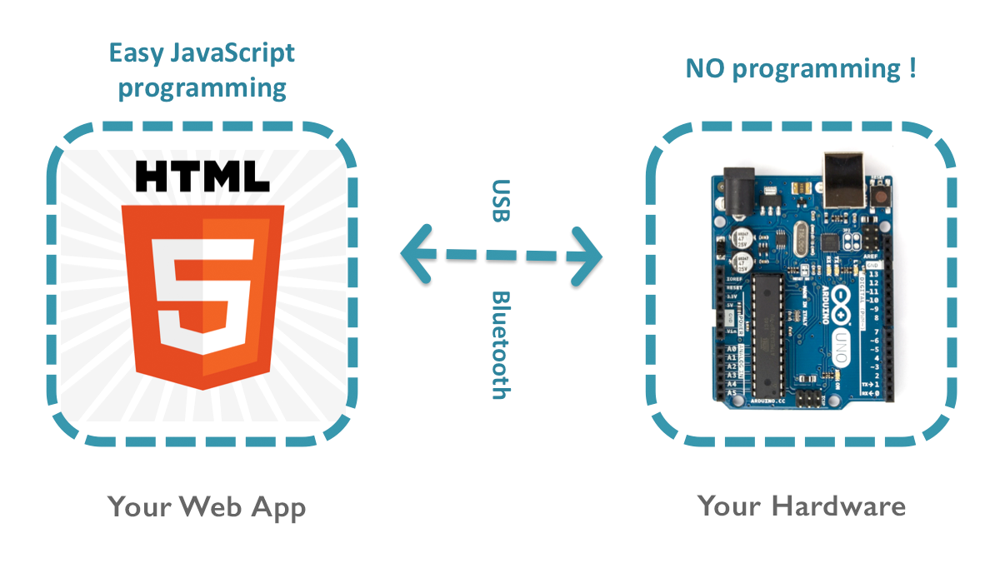
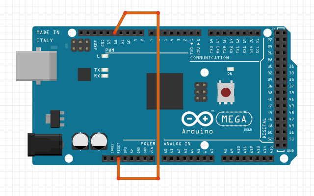

[ English ]
h5control 提供了一种简单便捷的方式使你的 web 应用能够控制带有数字/模拟 IO、电机、舵机、LED灯光、传感器和各种电子部件的自制硬件。现在就让我们开始一步步动手使用 h5control 吧!

需要一块 Arduino MEGA 或 UNO 控制板。
下载 rioc-arduino 程序, 在 Arduino IDE 中打开 RiocArduino.ino 程序， 并上传至 Arduino。
为了能够实现远程重置 Arduino，还必须使用一根电线将 Arduino 板上的管脚 12 和管脚 RESET 联接在一起。

Mac:
下载 h5control Service for macOS,
将应用程序 h5control Service 复制到你的 Applications 文件夹中，并运行它。
Windows:
下载 h5control Service for windows,
将 h5control Service 文件夹复制到你的电脑硬盘上，并运行此文件夹内的 h5connect.exe 或 h5connect-console.exe。
现在，请将为 h5control 做好准备的 Arduino 控制板联接到你电脑上的 USB 端口，然后就能 在 Web 浏览器中完成测试 ，你还可以在那里为你的 Arduino 设置 unit ID。
h5control 基础
1.1 h5control 入门
1.2 使用 Web Inspector
通用 IO 控制
2.1 数字输出 Digital Out
2.2 数字输入 Digital In
2.3 模拟输出 Analog Out
2.4 模拟输入 Analog In
2.5 串口通信 UART Serial
运动控制
3.1 电机 Motor
3.2 步进电机 Stepper
3.3 舵机 Rudder Servo
传感器
4.1 编码器 Encoder
4.2 超声波测距 Ultrasonic Ranger
4.3 温度传感器 Thermometer
声音和灯光
5.1 音调播放 Tone Player
5.2 LED 灯条 LED Strip
红外通信
6.1 红外接收 IR Receiver
6.2 红外发送 IR Transmitter
如需获得有关开发者的信息和这些项目的全部源码，请前往
robinz.org 和
github/robinz-labs .